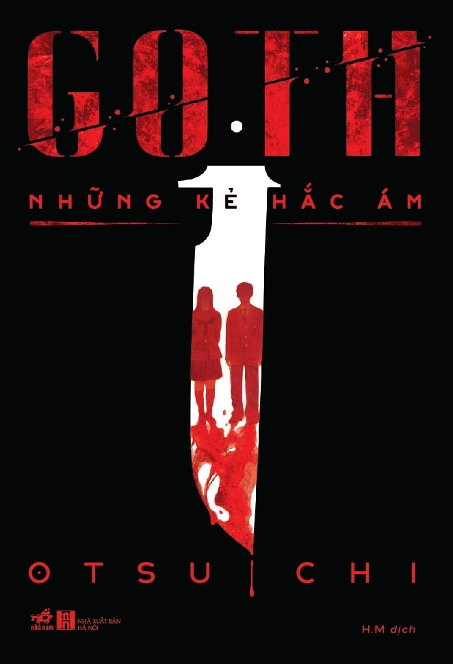

REVIEW SÁCH
Goth
Nhận xét của mình
Cuốn này không phải gu của mình lắm. Thứ nhất là nó không có yếu tố hình sự và điều tra từ những chi tiết, thứ hai là nhân vật chính trong cuốn này phản anh hùng (không phải phản diện nha). Cuốn này là về câu chuyện hai học sinh cấp 3 vô tình có được chứng cứ của một tên sát nhân giết người hàng loạt, nhưng thay vì báo công an thì chúng tự đi khám phá và tìm hiểu, rồi sau đó chúng kệ luôn. Và những vụ án kì lạ đằng sau nữa cũng vậy, chúng biết nhưng giấu nhẹm cho bản thân vì chúng có bản tính quái dị. Bản thân mình không thích đọc truyện mà nhân vật chính có tâm lý biến thái như thế, do vậy mà đây không phải gu của mình. Tuy nhiên thì những tình tiết trong cuốn này rất hay, và đôi khi mình cảm giác mình như con bò bị tác giả dắt vậy. Nhiều lúc đọc xong, mình phải dở lại trang trước xem mình có đọc đúng không, vì thật sự truyện bẻ lái siêu gắt. Bạn nào thích kiểu thế này có thể tham khảo nha.
🛍️ Tìm mua cuốn sách
Bạn có thể tham khảo giá tại các nhà sách online: